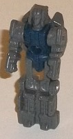
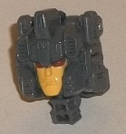
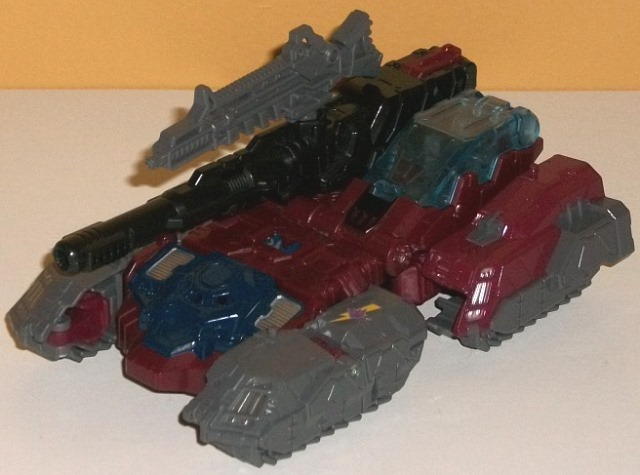
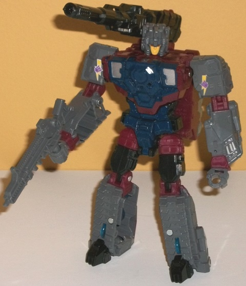

Allegiance
: Decepticon
Size:
Deluxe
Difficulty of Transformation
: Medium
Color Scheme
: Moderately dark gray,
dark dull marooon, black, and some transparent light pale blue, dark glossy
navy blue, silver, yellow, and light pale yellowish orange
Rating
: 7.6
(NOTE: Because this is a repaint, this is not a full-blown review. This mainly covers any changes made to the mold and the color scheme, and merely compares it to Titans Return Hardhead w/ Furos. For a review on the mold itself, read the review of Titans Return Hardhead w/ Furos here .)


Given that Quake is
a redeco of Hardhead, Chasm is a redeco of Furos-- for the most part. For
the Titan Master's robot mode, all of the details are the same. Unlike
Furos, however, Quake has no paint apps in this mode-- he's got a dark
dull navy blue body, and the rest of him is a somewhat dark gray, which
means that he just looks booooring. I mean, egads, at least put a bit of
paint on the face, SOMETHING. In head mode, the face has been remolded,
and looks like a more modernized version of his G1 face, as you'd expect.
He's got quite intricate detailing on the new facesculpt, with vents on
the sides of the forehead, little bitty details on the bit that juts up
from the center of the forehead, and ridges on the sides of his head. Because
of the limitations of Titan Master proportions, the side antennae aren't
as large proportionally as they were on the G1 toy, but he still looks
pretty good overall, with 95+% of the head plastic a solid gray with no
other colors showing on the top or back to break up that illusion of a
more "solid" head. The face is painted a pale yellowish orange, with some
really nice maroon eyes; both colors pop quite well against what is otherwise
a pretty boring scheme for the Titan Master.


The original G1 Quake
was a double-Targetmaster, and he had a fairly realistic tank mode, so
making him from Hardhead is a biiit of a stretch. I mean he's still a tank,
but it's more a futuristic, kinda "Vehicon-y" tank compared to a more regular
tank. The color scheme from the original toy is replicated fairly well
on this redeco, though. The main shades of a fairly dark gray, dull maroon,
and black are used in a fairly scattered manner throughout the toy, with
no one section being too much of one unbroken color. The G1 toy had a completely
maroon body and a completely gray turret, so that can't really be replicated
on this toy. Instead in vehicle mode, the treads are more the gray areas,
while the main body and top-sides of the rear two treads are maroon. The
only thing that really says this is Quake in vehicle mode are the small
Decepticon lightning bolt paint apps near the back of each front tread,
though they're definitely smaller here and less prevalent than on the original
toy. The colors are broken up more to be accurate to the G1 toy's robot
mode, and the overall structure of the toy definitely looks closer to G1
in robot mode as well. G1 Quake didn't have a massive gun on his shoulder,
but otherwise the color breakup is pretty accurate, with largely gray arms
and legs; black on his main gun, feet, upper legs, and much of the smaller
"connector pieces"; and maroon and dark blue mostly used on the main body,
with some silver paint apps here and there to help break things up a bit
more and help some details look closer to the original toy. There's also
a transparent pale blue used for the cockpit window and the wheels on the
bottom of the alt mode; the blue used there really should have been darker
to fit in with the excellent shade of dark navy blue paint used elsewhere
on Quake. Otherwise for what it's meant to mimic, it all looks pretty decent
in robot mode.
Titans Return Quake
w/ Chasm is one of the more easily skippable deluxes in the line, unless
you're just REALLY jonesing for a new Quake toy (and to be fair, there
hasn't been one since the original). The very un-realistic vehicle mode
does not fit Quake at all, even if certain aspects of the robot mode are
decent matches. The color scheme is does an okay job matching the toy it's
homaging, but taken by itself there's too much gray for my tastes, G1-accurate
or no, and thus isn't amazing enough to really grab me even if it's homaging
a character who hasn't seen a toy in 20 years.
Review by Beastbot